2026-09-30 @ CHESS 7b2
Under Construction
This page was auto-transcribed from handwritten notebooks and log files. We are currently reviewing for correctness and adding missing information (see TODO comments in markdown source). Use with caution.
First CHESS beam time of the 2026-3 run cycle.
Goals
- Beamline alignment and optimization after summer upgrades
- DHFR-Fol-NADP crystals from new batch: complete diffuse map at ambient temperature
- RT diffraction from Mac1 grown from alternate crystallization procedures (Katie L's crystals).
Participants
Steve M, Neti B, and Katie L (main), Stephen T and Supratik G (learning) from Ando lab; support from Mike P, Mike C, John I, and Tricia C at CHESS.
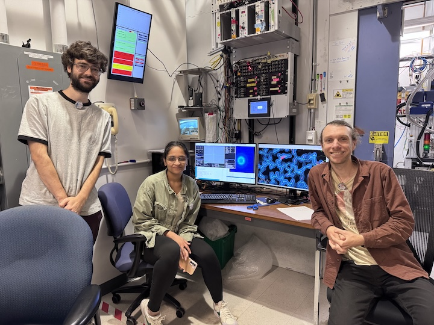
Data
Root directory at CHESS: /nfs/chess/raw/2026-3/id7b2/meisburger/20260930
Root directory on OSN: s3://diffuse-chess-public/20260930
Beamline setup
| parameter | value | notes |
|---|---|---|
| X-ray energy | 14 keV @ 0.01% bandwidth | Si 111 channel cut mono inserted |
| Beam size | 100 µm x 100 µm (initially) | Slit-defined, no CRL. Adjusted to match crystal size when noted, below. |
| Flux | 3.9 x 1010 ph/s | ICol ~17,700 / 0.1 s; see SPEC ct output below |
| Background reduction | On-axis mirror with Mo tube | |
| Centering camera | on-axis camera | New long working distance camera. Scalebar in screenshots (green bar, lower left) is 100 µm. |
| Beamstop | 700 µm diameter Mo disk suspended on mylar sheet | semi-transparent |
| Data collection software | "MX Collect" (python) & SPEC | Modified by Mike P to handle the new camera |
| Temperature control | none (ambient) |
Steve M, Steve T, Neti B, Mike P, Mike C, and Tricia C arrived between 9 and 10 am on September 30 to align the station. No significant bumping or cave optics adjustments were needed. However, a lot of things changed in the hutch over the summer, and in-hutch alignment was tricky. Getting beam through the channel cut, CRL pass-through, slits, and cleanup aperture turned out to be pretty difficult. Our hope was to begin data collection at noon, but alignment took all day; Mike P and Steve M stayed until midnight to finish. So data collection did not begin until October 1.
One new item is the centering camera. We previously were able to automatically save camera images at certain angles (every 30˚). This has not been implemented yet for the new camera, so we resorted to screenshots instead.
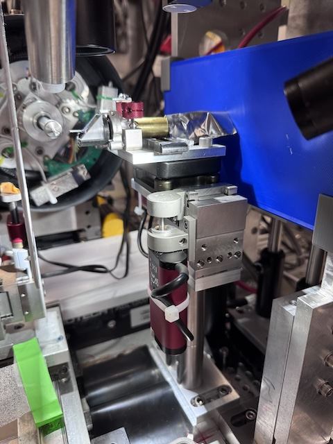
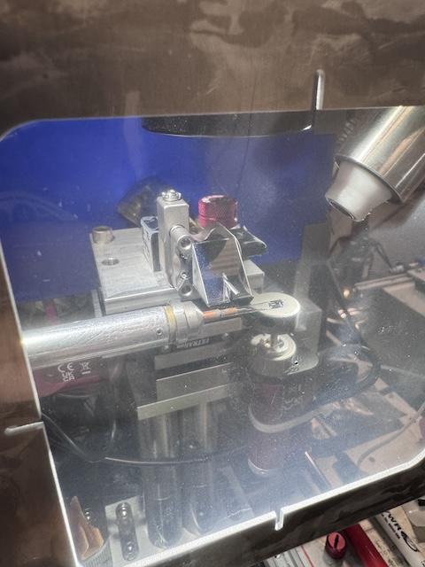
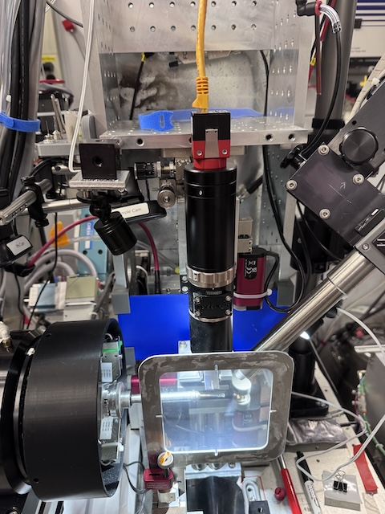
Samples
| Name | Sample | Well composition | Drop composition | Notes |
|---|---|---|---|---|
| Lysozyme | Hen egg lysozyme, 50 mg/mL in NaOAc | 24-well hanging-drop vapor diffusion tray set up by Supratik G for practice. | ||
| DHFR-Folate-NADP | E. coli dihydrofolate reductase expressed and purified at Cornell. Dialyzed in 20 mM imidazole pH 7.0 with 1 mM folic acid and concentrated to 35 mg/mL. NADP+ added in 3:1 molar excess (final concentrations: 31.5 mg/mL DHFR, 6.3 mM NADP) | 15-18% PEG 400, 100 mM MnCl2, 20 mM imidazole pH 7.0 | Crystals were looped in the cold room under red light and transported to CHESS at 4 deg C. See Neti B's Notebook | |
| Mac1 (P43) | SARS CoV2 NSP3 macrodomain | Several conditions from Katie L's optimization trays (see notes) | Trays named in the notebook: "Index H11 phase diagram" (wells G12, D11), "Index H11 new optimization" (wells D12, D?5), "Index H12 diagram" (well G12), and PEGRx F5 (well ?5). Crystals mac1_2 onward were looped in a humidity chamber. |
Data collection
Steve M and Neti B arrived at the beamline at 8:15 on October 1. Katie L and Supratik G arrived later. The plan was to collect DHFR data in the morning, before handing off the beamline to Raley at noon (Raley has the non-diffuse beamtime after ours), and to request more time later for Mac1 experiments.
Steve tuned mono, mith, and upz, then locked in beam position feedback. He measured flux using the ion chamber (I2), see table above:
From id7b2.classe.cornell.edu
Thu Oct 01 08:44:50 2026
Output of macro ct (14 keV, no atten, no CRL, slits 100 x 100)
Thu Oct 01 08:44:51 2026
Seconds = 1
Diode = 42 (42/s)
I2 = 46016 (46016/s) @ 50 nA/V
ICol = 177142 (177142/s)
Gate = 0 (0/s)
QuadX = 0 (0/s)
QuadY = 0.00013 (0.00013/s)
newI1 = 146197 (146197/s)
newI0 = 249982 (249982/s)
The flux is down from last run (9.7 x 1010 ph/s on 2026-06-22) by about 2.5x. Probably the focusing mirror or cave optics need attention. But it's plenty of flux for now. We will run without attenuation.
Collected a 1 s exposure with nothing in the beam to double-check the beamstop position and document the background scatter. Slits set to 100 x 100 µm.
Subdirectory: setup
| prefix | φ0 (deg.) | ∆φ (deg.) | images | ∆t (s) | tf (%) | d (mm) | E (keV) |
|---|---|---|---|---|---|---|---|
| air_656 | 0 | 0 | 1 | 1 | 100 | 185 | 14 |
Looks great!
1. Lysozyme (dose test)
Neti looped a ~100 µm lysozyme crystal from Supratik's tray, well A1. Slits 100 x 100 µm.
Subdirectory: lysozyme
| prefix | φ0 (deg.) | φ1 (deg.) | ∆φ (deg.) | images | ∆t (s) | tf (%) | d (mm) | E (keV) |
|---|---|---|---|---|---|---|---|---|
| lys_1_657 | 0 | 360 | 0.1 | 3600 | 0.03 | 100 | 185 | 14 |
| lys_1_bg_658 | 0 | 360 | 1 | 360 | 0.3 | 100 | 185 | 14 |
multiple lattices
The well was crowded with small crystals, and evidently there are multiple in the loop (55% indexed). Not a useful diffuse dataset, but fine for checking radiation damage.
Processing with xia2: mosaicity 0.018˚, 55% indexed. B-factor decay is about 5 Å2 per 180˚, or 0.1 Å2 / second. So, tolerable dose limit is ~20 s at this flux. This is a bit higher than expected. Let's repeat with a fresh crystal at 0.01 second exposures.
xia2 processing
| lys_1_657 | |
|---|---|
| scan | 657 |
| Mosaic spread | 0.018 |
| Resolution | 1.26 |
| Unit Cell | [79.49, 79.49, 38.04, 90.0, 90.0, 90.0] |
| Image range | [1, 3600] |
| Completeness | 100.0 |
| Multiplicity | 25.3 |
| I/sigma | 15.0 |
| Rpim | 0.019 |
| Wilson B factor | 20.04 |
| Space group | P 43 21 2 |
2. Lysozyme (dose test, repeat)
Neti looped a ~50 µm lysozyme crystal from Supratik's tray, well B1. Slits 100 x 100 µm.
Subdirectory: lysozyme
| prefix | φ0 (deg.) | φ1 (deg.) | ∆φ (deg.) | images | ∆t (s) | tf (%) | d (mm) | E (keV) |
|---|---|---|---|---|---|---|---|---|
| lys_2_659 | 0 | 360 | 0.1 | 3600 | 0.01 | 100 | 185 | 14 |
| lys_2_bg_660 | 0 | 360 | 1 | 360 | 0.1 | 100 | 185 | 14 |
directory naming
Both lysozyme crystals (lys_1 and lys_2) were saved directly in lysozyme, without a per-crystal subdirectory. This differs from the DHFR samples below and from the later lysozyme crystal (lysozyme/Lys_steve_T).
xia2 processing
| lys_2_659 | |
|---|---|
| scan | 659 |
| Mosaic spread | 0.007 |
| Resolution | 1.36 |
| Unit Cell | [79.44, 79.44, 38.04, 90.0, 90.0, 90.0] |
| Image range | [1, 3600] |
| Completeness | 100.0 |
| Multiplicity | 26.3 |
| I/sigma | 8.8 |
| Rpim | 0.034 |
| Wilson B factor | 20.16 |
| Space group | P 43 21 2 |
setup change
To avoid damaging folate, we turned off all lights in the hutch and used amber light from the microscope for centering.
3. DHFR-Folate-NADP
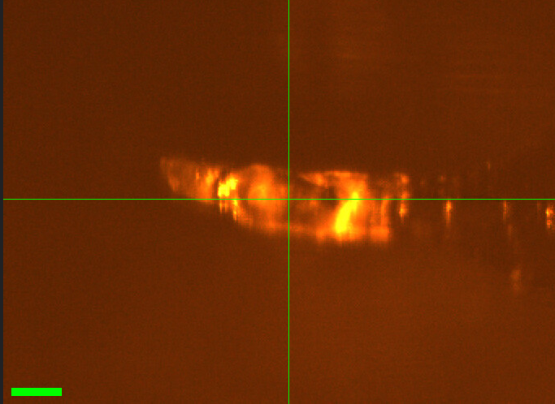
Neti mounted DHFR crystal #1 (from well A1).
Slits changed to 50 x 50 µm. Vector scan along the length of the crystal (spinx translation: 246.4 µm).
Subdirectory: DHFR/DHFR_1_A1
Neti saved a screenshot in the same directory to show what the crystal looked like.
| prefix | φ0 (deg.) | φ1 (deg.) | ∆φ (deg.) | images | ∆t (s) | tf (%) | d (mm) | E (keV) |
|---|---|---|---|---|---|---|---|---|
| DHFR_1_A1_661* | 0 | 360 | 0.1 | 3600 | 0.01 | 100 | 999 | 14 |
| DHFR_1_A1_662 | 0 | 360 | 0.1 | 3600 | 0.01 | 100 | 185 | 14 |
| DHFR_1_A1_bg_663 | 0 | 360 | 1 | 360 | 0.1 | 100 | 185 | 14 |
incomplete dataset
* DHFR_1_A1_661: forgot to move the detector in (d = 999 mm). Closed the shutter after a few seconds to avoid damaging the crystal. Repeated the collection with the correct detector distance (DHFR_1_A1_662). Do not use scan 661. Note that the crystal received a few seconds of extra dose before scan 662.
file naming
The screenshot for this crystal is named DHFR_A1.png (no crystal number), unlike the later screenshots (DHFR_3_A2.png, etc.).
xia2 processing
| DHFR_1_A1_662 | |
|---|---|
| scan | 662 |
| Mosaic spread | 0.048 |
| Resolution | 1.4 |
| Unit Cell | [34.43, 45.73, 99.31, 90.0, 90.0, 90.0] |
| Image range | [1, 3600] |
| Completeness | 100.0 |
| Multiplicity | 13.3 |
| I/sigma | 6.4 |
| Rpim | 0.071 |
| Wilson B factor | 18.19 |
| Space group | P 21 21 21 |
4. DHFR-Folate-NADP
Neti mounted DHFR crystal #2 (from well A2). The crystal is sitting on the neck of the loop (not good for diffuse). No screenshot was recorded.
Slits 50 x 50 µm. Vector scan (spinx translation: 217.6 µm).
Subdirectory: DHFR/DHFR_2_A2
| prefix | φ0 (deg.) | φ1 (deg.) | ∆φ (deg.) | images | ∆t (s) | tf (%) | d (mm) | E (keV) |
|---|---|---|---|---|---|---|---|---|
| DHFR_2_A2_664 | 0 | 360 | 0.1 | 3600 | 0.01 | 100 | 185 | 14 |
| DHFR_2_A2_bg_665 | 0 | 360 | 1 | 360 | 0.1 | 100 | 185 | 14 |
crystal on the neck of the loop
Loop material is likely in the beam path, so this dataset is not ideal for diffuse scattering. Statistics are also somewhat poorer than the other DHFR crystals (Rpim 0.107, resolution 1.53 Å).
xia2 processing
| DHFR_2_A2_664 | |
|---|---|
| scan | 664 |
| Mosaic spread | 0.023 |
| Resolution | 1.53 |
| Unit Cell | [34.38, 45.47, 99.51, 90.0, 90.0, 90.0] |
| Image range | [1, 3600] |
| Completeness | 100.0 |
| Multiplicity | 13.2 |
| I/sigma | 8.5 |
| Rpim | 0.107 |
| Wilson B factor | 21.17 |
| Space group | P 21 21 21 |
5. DHFR-Folate-NADP
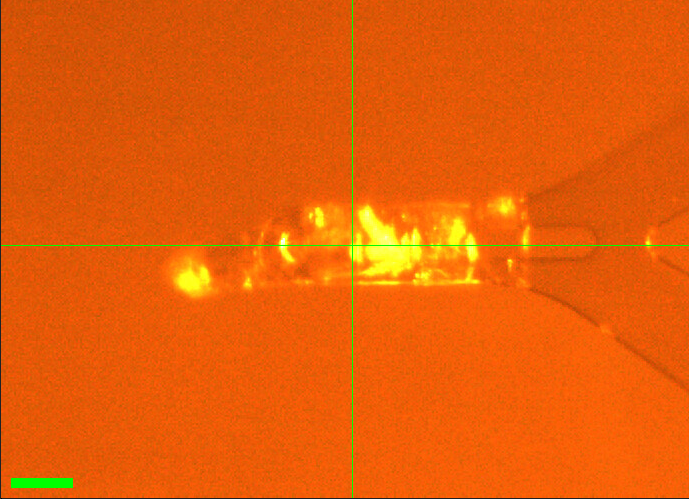
Neti mounted DHFR crystal #3 (from well A2). The crystal is sitting on the tip of the loop.
Slits 50 x 50 µm. Vector scan (spinx translation: 255.9 µm).
Subdirectory: DHFR/DHFR_3_A2
Neti saved a screenshot in the same directory.
| prefix | φ0 (deg.) | φ1 (deg.) | ∆φ (deg.) | images | ∆t (s) | tf (%) | d (mm) | E (keV) |
|---|---|---|---|---|---|---|---|---|
| DHFR_3_A2_666 | 0 | 360 | 0.1 | 3600 | 0.01 | 100 | 185 | 14 |
| DHFR_3_A2_bg_667 | 0 | 360 | 1 | 360 | 0.1 | 100 | 185 | 14 |
xia2 processing
| DHFR_3_A2_666 | |
|---|---|
| scan | 666 |
| Mosaic spread | 0.026 |
| Resolution | 1.41 |
| Unit Cell | [34.38, 45.6, 99.37, 90.0, 90.0, 90.0] |
| Image range | [1, 3600] |
| Completeness | 99.5 |
| Multiplicity | 13.4 |
| I/sigma | 6.3 |
| Rpim | 0.057 |
| Wilson B factor | 18.73 |
| Space group | P 21 21 21 |
6. DHFR-Folate-NADP
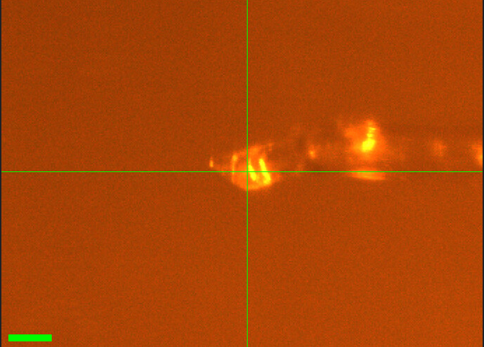
Neti mounted another DHFR crystal (#4, from well A2).
Slits 50 x 50 µm. Vector scan (spinx translation: 228.9 µm).
Subdirectory: DHFR/DHFR_4_A2
Neti saved a screenshot in the same directory.
| prefix | φ0 (deg.) | φ1 (deg.) | ∆φ (deg.) | images | ∆t (s) | tf (%) | d (mm) | E (keV) |
|---|---|---|---|---|---|---|---|---|
| DHFR_4_A2_668 | 0 | 360 | 0.1 | 3600 | 0.01 | 100 | 185 | 14 |
| DHFR_4_A2_bg_669 | 0 | 360 | 1 | 360 | 0.1 | 100 | 185 | 14 |
weak start of dataset
Very few spots at the beginning of the dataset. It needs to be truncated and refit. The xia2 result below used the full image range.
xia2 processing
| DHFR_4_A2_668 | |
|---|---|
| scan | 668 |
| Mosaic spread | 0.03 |
| Resolution | 1.51 |
| Unit Cell | [34.39, 45.45, 99.52, 90.0, 90.0, 90.0] |
| Image range | [1, 3600] |
| Completeness | 100.0 |
| Multiplicity | 13.2 |
| I/sigma | 7.0 |
| Rpim | 0.072 |
| Wilson B factor | 20.78 |
| Space group | P 21 21 21 |
7. DHFR-Folate-NADP
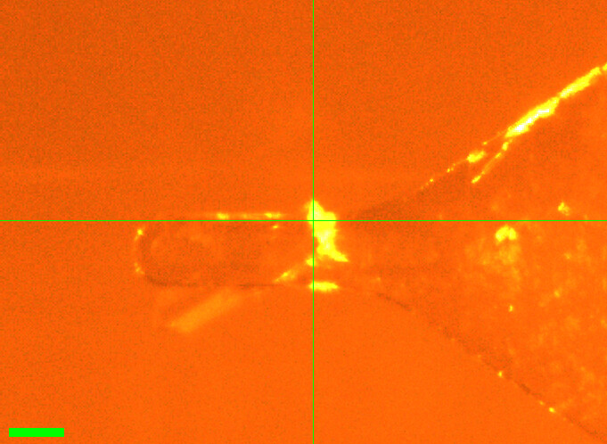
Neti mounted DHFR crystal #5 (from well A2).
Slits 50 x 50 µm. Vector scan (spinx translation: 235.2 µm).
Subdirectory: DHFR/DHFR_5_A2
Neti saved a screenshot in the same directory.
| prefix | φ0 (deg.) | φ1 (deg.) | ∆φ (deg.) | images | ∆t (s) | tf (%) | d (mm) | E (keV) |
|---|---|---|---|---|---|---|---|---|
| DHFR_5_A2_670 | 0 | 360 | 0.1 | 3600 | 0.01 | 100 | 185 | 14 |
| DHFR_5_A2_bg_671 | 0 | 360 | 1 | 360 | 0.1 | 100 | 185 | 14 |
poor statistics
Rpim is 0.204, about 2–4x higher than the other DHFR crystals collected today (0.049–0.107), despite similar resolution and I/sigma. Check processing (e.g. multiple lattices, indexing rate, or a problem partway through the scan) before using this dataset.
xia2 processing
| DHFR_5_A2_670 | |
|---|---|
| scan | 670 |
| Mosaic spread | 0.023 |
| Resolution | 1.47 |
| Unit Cell | [34.41, 45.52, 99.47, 90.0, 90.0, 90.0] |
| Image range | [1, 3600] |
| Completeness | 100.0 |
| Multiplicity | 13.1 |
| I/sigma | 8.6 |
| Rpim | 0.204 |
| Wilson B factor | 19.92 |
| Space group | P 21 21 21 |
8. DHFR-Folate-NADP
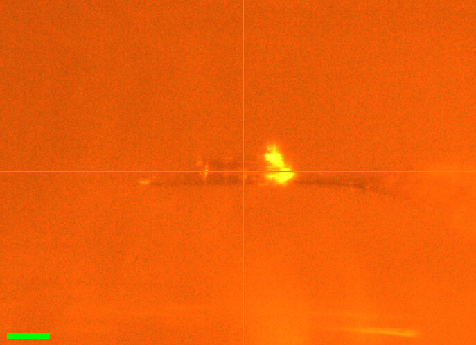
Neti mounted DHFR crystal #6 (from well A2).
Slits changed to 50 µm (height) x 120 µm (width), per notebook. Regular (not vector) scan.
Subdirectory: DHFR/DFHR_6_A2
Saved a screenshot in the same directory.
| prefix | φ0 (deg.) | φ1 (deg.) | ∆φ (deg.) | images | ∆t (s) | tf (%) | d (mm) | E (keV) |
|---|---|---|---|---|---|---|---|---|
| DHFR_6_A2_672 | 0 | 360 | 0.1 | 3600 | 0.01 | 100 | 185 | 14 |
| DHFR_6_A2_bg_673 | 0 | 360 | 1 | 360 | 0.1 | 100 | 185 | 14 |
directory name typo
The subdirectory was accidentally named DHFR/DFHR_6_A2 (should be DHFR/DHFR_6_A2). File prefixes are correct (DHFR_6_A2_*).
xia2 processing
| DHFR_6_A2_672 | |
|---|---|
| scan | 672 |
| Mosaic spread | 0.019 |
| Resolution | 1.33 |
| Unit Cell | [34.42, 45.58, 99.42, 90.0, 90.0, 90.0] |
| Image range | [1, 3600] |
| Completeness | 100.0 |
| Multiplicity | 13.3 |
| I/sigma | 9.8 |
| Rpim | 0.049 |
| Wilson B factor | 17.01 |
| Space group | P 21 21 21 |
9. DHFR-Folate-NADP
Neti mounted a funky looking crystal (#7, from well B4). It has "split ends", so we shot from the middle only. No screenshot was recorded.
Slits changed to 100 µm (height) x 150 µm (width), per notebook. Regular (not vector) scan.
Subdirectory: DHFR/DHFR_7_B4
| prefix | φ0 (deg.) | φ1 (deg.) | ∆φ (deg.) | images | ∆t (s) | tf (%) | d (mm) | E (keV) |
|---|---|---|---|---|---|---|---|---|
| DHFR_7_B4_674 | 0 | 360 | 0.1 | 3600 | 0.01 | 100 | 185 | 14 |
poor diffraction
Poor diffraction. The background scan was skipped, and no xia2 processing results are available.
10. Lysozyme
Steve T looped another lysozyme crystal from well A2 of Supratik's tray. Slits 100 x 100 µm.
Subdirectory: lysozyme/Lys_steve_T
| prefix | φ0 (deg.) | φ1 (deg.) | ∆φ (deg.) | images | ∆t (s) | tf (%) | d (mm) | E (keV) |
|---|---|---|---|---|---|---|---|---|
| Lys_A2_675 | 0 | 360 | 0.1 | 3600 | 0.01 | 100 | 185 | 14 |
| Lys_A2_bg_676 | 0 | 360 | 1 | 360 | 0.1 | 100 | 185 | 14 |
directory and file naming
This crystal does not follow the naming convention used earlier in the day. The subdirectory is named after the person (lysozyme/Lys_steve_T; written as Lys-Steve_T in the notebook), and the prefix Lys_A2 uses a capital L and the well name instead of a crystal number (lys_1 and lys_2 above; this would have been lys_3).
We handed off the beamline to Raley S. at noon for her scheduled beamtime (under a different proposal). We will use extra time for Mac1 if Raley finishes early.
Katie L and Neti B returned at 8:00 pm to collect Mac1.
11. Mac1 (P43)
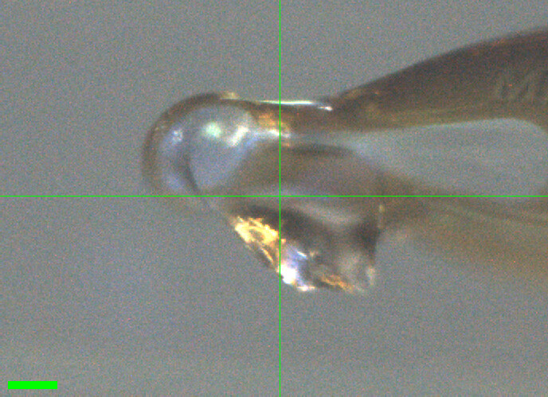
Katie looped the bigger crystal from the "Index H11 phase diagram" tray, well G12. Slits 100 x 100 µm.
Subdirectory: mac1/mac1_1
| prefix | φ0 (deg.) | φ1 (deg.) | ∆φ (deg.) | images | ∆t (s) | tf (%) | d (mm) | E (keV) |
|---|---|---|---|---|---|---|---|---|
| mac1_1_684 | 0 | 360 | 0.1 | 3600 | 0.01 | 100 | 185 | 14 |
| mac1_1_bg_685 | 0 | 360 | 1 | 360 | 0.1 | 100 | 185 | 14 |
lower completeness, higher mosaicity
Completeness is 90.2% and mosaic spread 0.071˚, compared with 95.9–100% and 0.012–0.042˚ for the other Mac1 crystals today.
xia2 processing
| mac1_1_684 | |
|---|---|
| scan | 684 |
| Mosaic spread | 0.071 |
| Resolution | 1.06 |
| Unit Cell | [89.4, 89.4, 40.29, 90.0, 90.0, 90.0] |
| Image range | [1, 3600] |
| Completeness | 90.2 |
| Multiplicity | 11.2 |
| I/sigma | 14.1 |
| Rpim | 0.019 |
| Wilson B factor | 12.59 |
| Space group | P 43 |
12. Mac1 (P43)
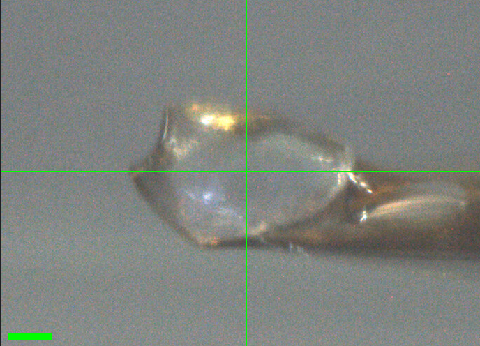
Katie looped a crystal in the humidity chamber, from the "Index H11 phase diagram" tray, well D11. The crystal had cracked in half; this half was easier to grab. Slits 100 x 100 µm.
Subdirectory: mac1/mac1_2
| prefix | φ0 (deg.) | φ1 (deg.) | ∆φ (deg.) | images | ∆t (s) | tf (%) | d (mm) | E (keV) |
|---|---|---|---|---|---|---|---|---|
| mac1_2_686 | 0 | 360 | 0.1 | 3600 | 0.01 | 100 | 185 | 14 |
| mac1_2_bg_687* | 0 | 360 | 1 | 360 | 0.1 | 100 | 185 | 14 |
| mac1_2_bg_fr_688 | 0 | 360 | 1 | 360 | 0.1 | 100 | 185 | 14 |
bad background scan
* mac1_2_bg_687: the crystal was still in the beam path, so this "background" is an overexposed crystal dataset, not a background. Diffraction still looked very good. Use mac1_2_bg_fr_688 as the background for mac1_2. Note also that the crystal received an extra 36 s of exposure after the data scan.
xia2 processing
| mac1_2_686 | |
|---|---|
| scan | 686 |
| Mosaic spread | 0.021 |
| Resolution | 1.07 |
| Unit Cell | [89.51, 89.51, 40.69, 90.0, 90.0, 90.0] |
| Image range | [1, 3600] |
| Completeness | 95.9 |
| Multiplicity | 10.8 |
| I/sigma | 17.0 |
| Rpim | 0.015 |
| Wilson B factor | 13.25 |
| Space group | P 43 |
13. Mac1 (P43)
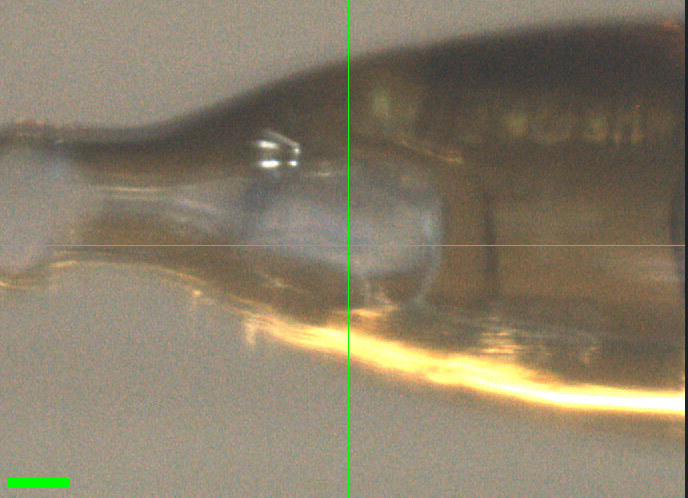
Katie looped the second half of the cracked crystal from mac1_2 ("Index H11 phase diagram" tray, well D11) in the humidity chamber. Slits 100 x 100 µm.
Subdirectory: mac1/mac1_3
| prefix | φ0 (deg.) | φ1 (deg.) | ∆φ (deg.) | images | ∆t (s) | tf (%) | d (mm) | E (keV) |
|---|---|---|---|---|---|---|---|---|
| mac1_3_689 | 0 | 360 | 0.1 | 3600 | 0.01 | 100 | 185 | 14 |
| mac1_3_bg_690 | 0 | 360 | 1 | 360 | 0.1 | 100 | 185 | 14 |
xia2 processing
| mac1_3_689 | |
|---|---|
| scan | 689 |
| Mosaic spread | 0.035 |
| Resolution | 1.14 |
| Unit Cell | [89.51, 89.51, 40.71, 90.0, 90.0, 90.0] |
| Image range | [1, 3600] |
| Completeness | 100.0 |
| Multiplicity | 11.9 |
| I/sigma | 14.5 |
| Rpim | 0.022 |
| Wilson B factor | 13.54 |
| Space group | P 43 |
14. Mac1 (P43)
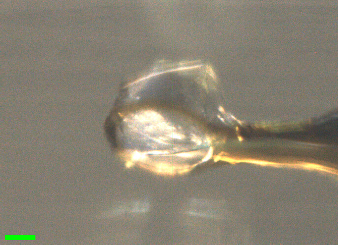
Katie looped a crystal in the humidity chamber, from the "Index H11 new optimization" tray, well D12, using a 300 µm loop. The crystal sits on the edge of the loop. Slits 100 x 100 µm.
Subdirectory: mac1/mac1_4
| prefix | φ0 (deg.) | φ1 (deg.) | ∆φ (deg.) | images | ∆t (s) | tf (%) | d (mm) | E (keV) |
|---|---|---|---|---|---|---|---|---|
| mac1_4_691 | 0 | 360 | 0.1 | 3600 | 0.01 | 100 | 185 | 14 |
| mac1_4_bg_692 | 0 | 360 | 1 | 360 | 0.1 | 100 | 185 | 14 |
xia2 processing
| mac1_4_691 | |
|---|---|
| scan | 691 |
| Mosaic spread | 0.017 |
| Resolution | 1.06 |
| Unit Cell | [89.51, 89.51, 40.55, 90.0, 90.0, 90.0] |
| Image range | [1, 3600] |
| Completeness | 96.6 |
| Multiplicity | 10.5 |
| I/sigma | 16.1 |
| Rpim | 0.016 |
| Wilson B factor | 12.92 |
| Space group | P 43 |
15. Mac1 (P43)
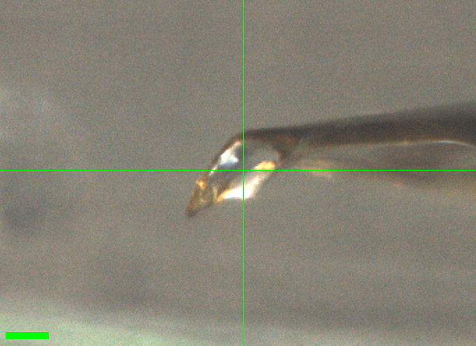
Neti looped a crystal in the humidity chamber, from the "Index H11 new optimization" tray. Slits 100 x 100 µm.
Subdirectory: mac1/mac1_5
| prefix | φ0 (deg.) | φ1 (deg.) | ∆φ (deg.) | images | ∆t (s) | tf (%) | d (mm) | E (keV) |
|---|---|---|---|---|---|---|---|---|
| mac1_5_693 | 0 | 360 | 0.1 | 3600 | 0.01 | 100 | 185 | 14 |
| mac1_5_bg_694 | 0 | 360 | 1 | 360 | 0.1 | 100 | 185 | 14 |
weaker data
I/sigma is 9.4 and Rpim 0.032, versus 14–17 and 0.015–0.022 for the other Mac1 crystals today.
xia2 processing
| mac1_5_693 | |
|---|---|
| scan | 693 |
| Mosaic spread | 0.012 |
| Resolution | 1.13 |
| Unit Cell | [89.45, 89.45, 40.37, 90.0, 90.0, 90.0] |
| Image range | [1, 3600] |
| Completeness | 99.3 |
| Multiplicity | 11.7 |
| I/sigma | 9.4 |
| Rpim | 0.032 |
| Wilson B factor | 13.05 |
| Space group | P 43 |
16. Mac1 (P43)
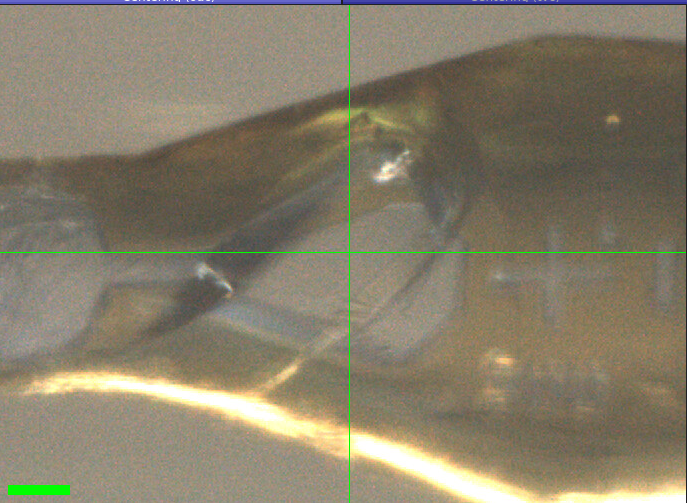
Katie looped a crystal in the humidity chamber, from the "Index H12 diagram" tray, well G12, using a 300 µm loop. Slits changed to 150 x 150 µm. We took two datasets at two different positions on the same crystal (regular, not vector, scans), with one shared background.
Subdirectory: mac1/mac1_6
| prefix | φ0 (deg.) | φ1 (deg.) | ∆φ (deg.) | images | ∆t (s) | tf (%) | d (mm) | E (keV) |
|---|---|---|---|---|---|---|---|---|
| mac1_6_695 | 0 | 360 | 0.1 | 3600 | 0.01 | 100 | 185 | 14 |
| mac1_6_2_696 | 0 | 360 | 0.1 | 3600 | 0.01 | 100 | 185 | 14 |
| mac1_6_bg_697 | 0 | 360 | 1 | 360 | 0.1 | 100 | 185 | 14 |
two datasets, one crystal
mac1_6_2_696 is a second dataset on the same crystal at a different position, not a separate crystal. Both datasets share the background mac1_6_bg_697. The background was collected after both data scans, so it reflects the crystal's state after two full datasets. The two positions are not recorded in the scan log (regular scans).
xia2 processing
| mac1_6_695 | mac1_6_2_696 | |
|---|---|---|
| scan | 695 | 696 |
| Mosaic spread | 0.042 | 0.017 |
| Resolution | 1.08 | 1.07 |
| Unit Cell | [89.48, 89.48, 40.42, 90.0, 90.0, 90.0] | [89.48, 89.48, 40.39, 90.0, 90.0, 90.0] |
| Image range | [1, 3600] | [1, 3600] |
| Completeness | 97.8 | 97.0 |
| Multiplicity | 10.9 | 10.7 |
| I/sigma | 14.6 | 16.5 |
| Rpim | 0.019 | 0.017 |
| Wilson B factor | 12.94 | 12.85 |
| Space group | P 43 | P 43 |
17. Mac1 (P43)
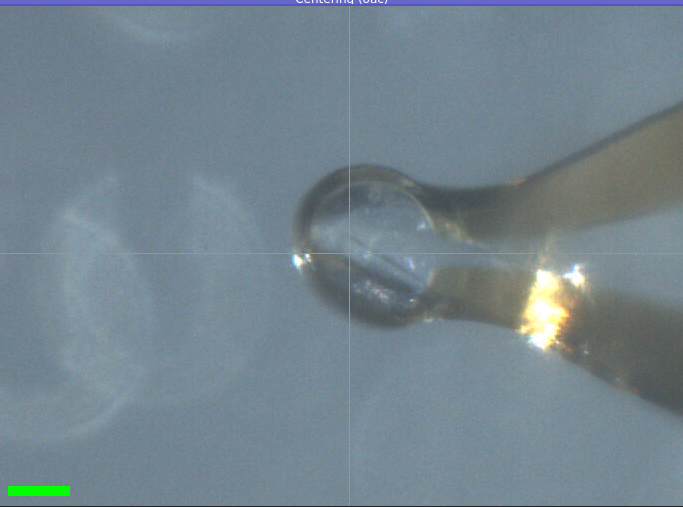
Katie looped a crystal in the humidity chamber, from the PEGRx F5 tray. Slits 150 x 150 µm. Vector scan (spinx translation: 252.8 µm).
Subdirectory: mac1/mac1_7
| prefix | φ0 (deg.) | φ1 (deg.) | ∆φ (deg.) | images | ∆t (s) | tf (%) | d (mm) | E (keV) |
|---|---|---|---|---|---|---|---|---|
| mac1_7_698 | 0 | 360 | 0.1 | 3600 | 0.01 | 100 | 185 | 14 |
| mac1_7_bg_699 | 0 | 360 | 1 | 360 | 0.1 | 100 | 185 | 14 |
Done!